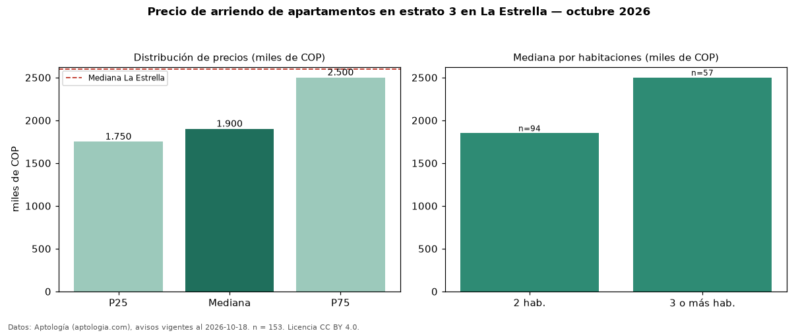

Precio de arriendo de apartamentos en estrato 3 en La Estrella — octubre 2026
Con 153 avisos vigentes, el canon mediano de apartamentos en estrato 3 en arriendo en La Estrella es COP 1,90 millones al mes. Frente a la mediana de los apartamentos en arriendo de La Estrella (COP 2,60 millones, n = 490), queda 27 % por debajo; este segmento reúne el 31 % de esos avisos. Por metro cuadrado, la mediana es COP 34.483/m² al mes (n = 153), 10 % por debajo de los apartamentos en arriendo de La Estrella (COP 38.333/m²). El área mediana anunciada es 60 m². El segmento con más oferta es el de 2 habitaciones (94 avisos, mediana COP 1,85 millones); pasar de 2 habitaciones a 3 o más habitaciones cambia la mediana +35 %. La mitad central de los avisos va de COP 1,75 millones a COP 2,50 millones (razón 1,4), una dispersión moderada. Datos: Aptología (aptologia.com), CC BY 4.0 — https://www.aptologia.com/arriendo/la-estrella. Archivos: PDF, CSV con las cifras y gráfica PNG.

| Avisos únicos | 153 |
|---|---|
| Percentil 25 | COP 1.750.000 |
| Mediana | COP 1.900.000 |
| Percentil 75 | COP 2.500.000 |
| Mediana por m² | COP 34.482 |
Fuente: avisos vigentes de portales inmobiliarios recopilados por Aptología, deduplicados (mínimo 30 avisos únicos por celda). Precios pedidos, no cerrados. Fecha: 2026-10-18.